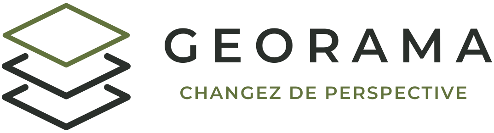
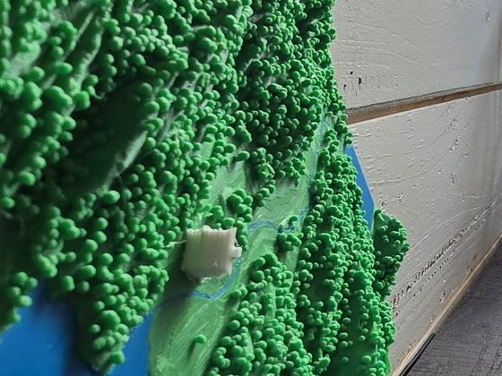
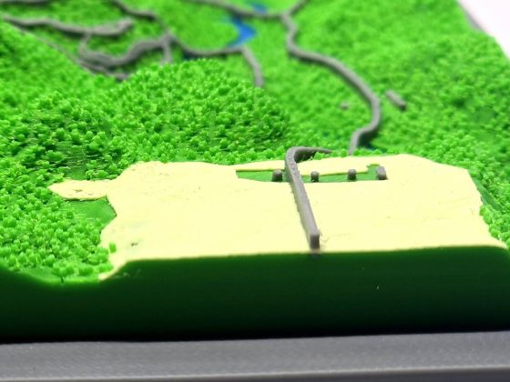
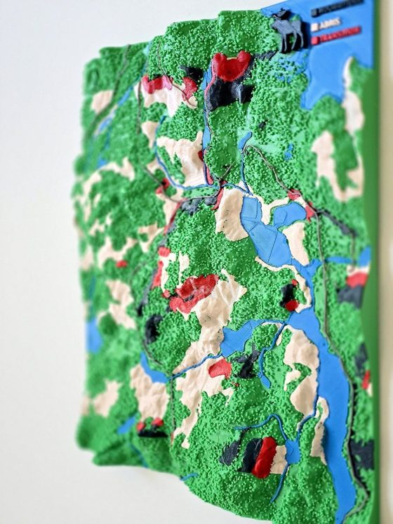
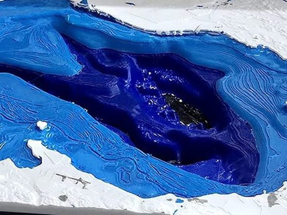
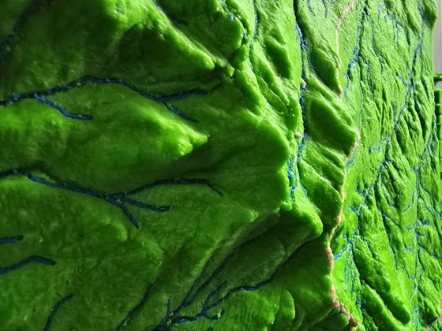
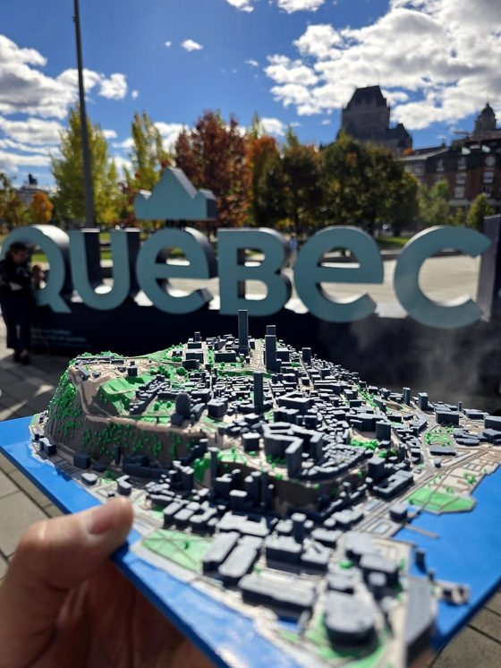

Cette carte vous donne droit à une maquette topographique Georama, fabriquée sur mesure à partir du vrai relief du lieu que vous choisissez : votre lac, votre terre, votre montagne.


Terre à bois, chalet
Terre agricole
Territoire de chasse
Lac de pêche
Montagne, sommet
Ville, quartierCherchez une adresse, un lac ou un lot, puis tracez la zone à mettre en relief. Aucune inscription.
Ajoutez vos repères 3D, vos bâtiments ou vos chemins, puis choisissez vos couleurs. L'aperçu 3D est gratuit : essayez autant de lieux que vous voulez.
Choisissez la maquette Signature de 10 × 12 po et entrez le code de votre carte au moment de payer.
Votre maquette arrive chez vous environ 3 semaines après la commande : 2 semaines de fabrication, puis environ 7 jours de livraison.